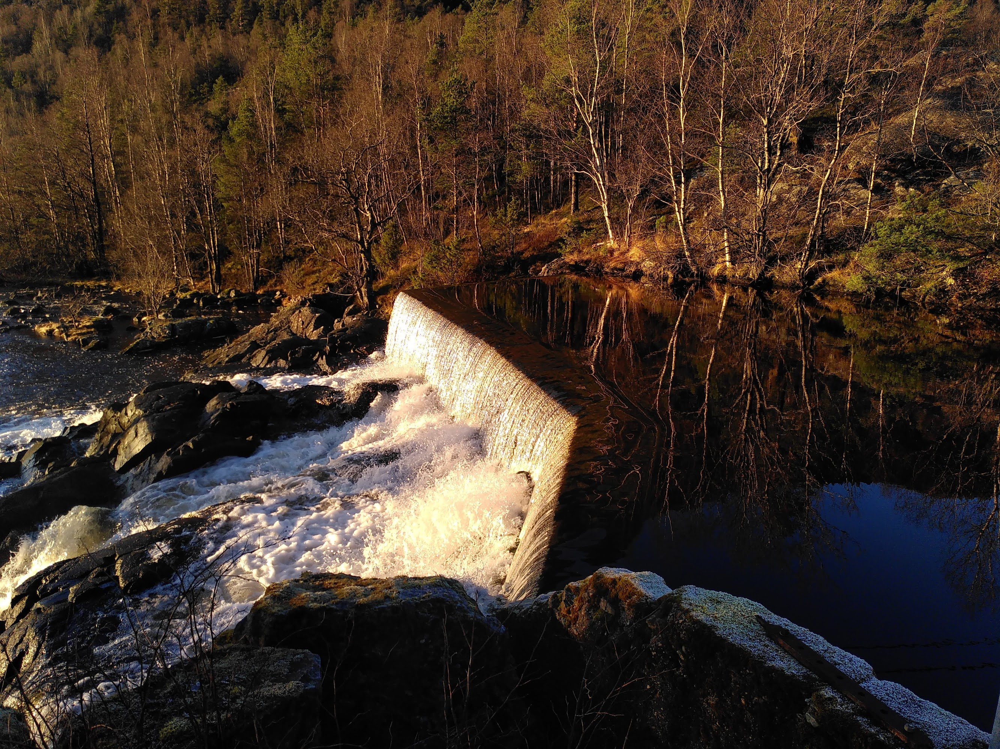

Hoeveelheid water en rooster onderhoud
Hoeveelheid water: welke turbines aan?
- Water gaat RUIM over dam: alle turbines aan (NB: geldt niet voor als externen het kraftverk monitoren, dan staat turbine 3 niet aan).
- Water gaat NET over dam: turbine 1 en 3 aan (NB: geldt niet voor als externen het kraftverk monitoren, dan staat turbine 3 niet aan).

- Water gaat NIET over dam: alleen turbine 3 aan.

Voor vragen: neem contact op met Martijn B. Normaal via messenger / whats app, voor spoed: +47 980 63 823
Terug naar overzicht site